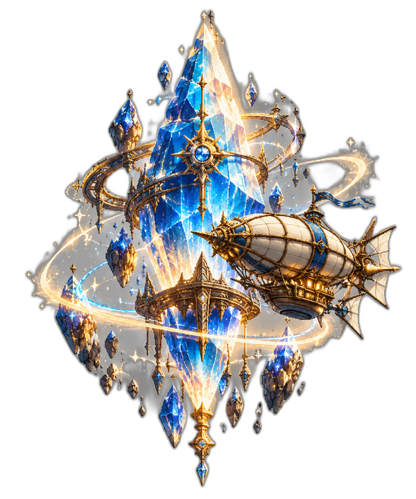

Home › Cup of Game › Final Fantasy Resonance
Cup of Game · AAFINAL FANTASY RESONANCE: il JRPG che usa la nostalgia senza copiarla

Illustrazione originale ispirata al gioco, non artwork ufficiale.
Il primo Final Fantasy in HD-2D: pixel art moderna e combattimento a turni per tornare alle origini della serie.
Analisi editoriale: dati verificati sulle fonti ufficiali al 30/10/2026; fasce indicative, giudizi redazionali.
Final Fantasy Resonance parte da un'idea semplice: riportare la serie al pixel art, ma con una produzione moderna. È il primo Final Fantasy in HD-2D, e Square Enix lo ha costruito come un RPG completo, non come un port.
La storia ruota intorno ai cristalli e a un gruppo di compagni legati dal destino. In battaglia puoi contare sulle “Visioni”, versioni di personaggi storici della serie come Cloud, Tidus e il Warrior of Light, che combattono al tuo fianco con abilità proprie. È un modo per usare la nostalgia senza ridurre tutto a un cameo.
Cosa è confermato
- Uscita: 22 ottobre 2026 su console e PC; l'annuncio Square Enix Asia indica il 23 ottobre per Steam in alcune regioni.
- Piattaforme: PC via Steam e Microsoft Store, PS5, Xbox Series X|S, Nintendo Switch e Nintendo Switch 2.
- Sviluppo: Square Enix con LANCARSE.
- Combattimento: a turni, con debolezze nemiche, stagger e attacchi Resonance.
- Prezzo: circa 40–45 € su G2A; 45–50 € standard e 55–65 € Digital Deluxe su Steam.
- Riscontro: 97% di recensioni positive su 2.203 recensioni in inglese; Metacritic 80 su PC.
La nostalgia come punto di partenza
Resonance recupera cristalli, aeronavi, esper e moogle. Sono elementi familiari, ma inseriti in un mondo nuovo. La grafica HD-2D mescola pixel art e modelli 3D, con inquadrature dinamiche: è il tratto più riconoscibile del gioco e il motivo per cui attira anche chi non gioca un JRPG da anni.
Il combattimento chiede di sfruttare le debolezze, rompere la difesa dei nemici e guadagnare turni extra. Le Visioni aggiungono scelta al party. Non è un sistema action: se cerchi riflessi e combo, questo non è il titolo giusto.
Lettura redazionale: il punto non è “quanto è simile ai vecchi Final Fantasy”, ma se il sistema a turni e la struttura a capitoli reggono per tutta la durata. I primi riscontri sono positivi; il giudizio completo richiede più tempo e va separato dall'entusiasmo nostalgico.
Cosa serve per giocarlo su PC
- Minimi: Ryzen 3 2300X o i3-8100, 8 GB di RAM, GTX 1650 o equivalenti, 15 GB di spazio.
- Requisiti consigliati (scheda Steam): Ryzen 5 2500X o i3-8100, 8 GB di RAM, GTX 1650 o equivalenti, 15 GB di spazio.
I requisiti sono contenuti. È un gioco che può stare tranquillamente in una build Economy o Media, senza pretendere una GPU di fascia alta.
Nota pratica: al 30/10/2026 l'italiano non compare tra le lingue elencate sulla pagina Steam. Verifica il supporto nella tua versione.
A chi è adatto
A chi ama i JRPG classici, la pixel art e i combattimenti a turni. A chi vuole un Final Fantasy che prova a tornare alle origini senza essere un semplice remake. Meno adatto a chi cerca action in tempo reale o una storia completamente slegata dalla serie.
Preferisci i Final Fantasy a turni o quelli action? Quale stile vorresti vedere nel prossimo capitolo?
Dove acquistare
Trasparenza: in qualità di Affiliato Amazon io ricevo un guadagno dagli acquisti idonei. Alcuni link a G2A sono link di affiliazione: se acquisti tramite questi link posso ricevere una commissione, senza costi aggiuntivi per te.
Vedi FINAL FANTASY RESONANCE su G2A →
Fasce indicative (ottobre–novembre 2026). Non sono un prezzo di vendita: il prezzo aggiornato è sulla pagina del prodotto.
Prezzo indicativo: circa 40–45 € su G2A · 45–50 € standard e 55–65 € Digital Deluxe su Steam.
Fonti: annuncio Square Enix · Steam · Metacritic PC